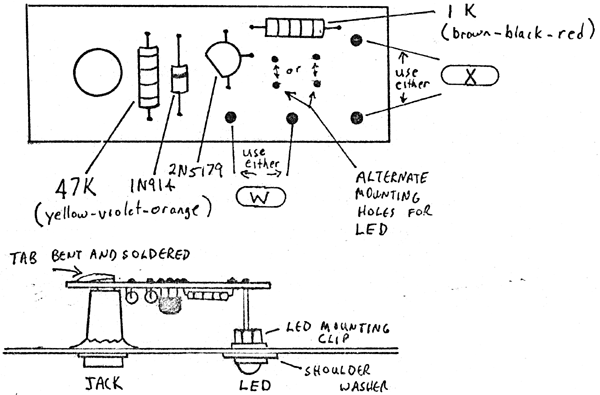

|
Led Mounting Diagram
 Mount all components on the printed circuit board except for the Light-Emitting-Diode itself. Note the polarity of the diode, and the spacing of the transistor leads. The triangular pattern on the printed circuit board must match the pattern of the leads on the transistor. Mount the assembled circuit board on the rear of the jack as shown. Bend the tab of the jack and solder to the large area on the circuit board. Install an LED clip into a shoulder washer and insert the LED into the clip as shown. The plastic clip can be bent apart to insert the LED from the rear. ...try to avoid putting too much strain on the leads of the indicator itself. Place the entire assembly into the panel hole, feeding the leads of the LED into the appropriate holes on the printed circuit board. There are two sets of holes for two types of spacings used on the panels. Use the pair that are directly behind the hole for the LED assembly. The longer lead on the LED goes to the bottom hole as shown in the diagram (which is connected on the circuit board to pad "X") and the shorter lead goes to the top hole (which connects to the 1k resistor). Solder the LED in so that there is little strain on the board and LED assembly. Connect pads "W" and "X" to the "W" and the "X" pads on the module circuit board with insulated wire.
|